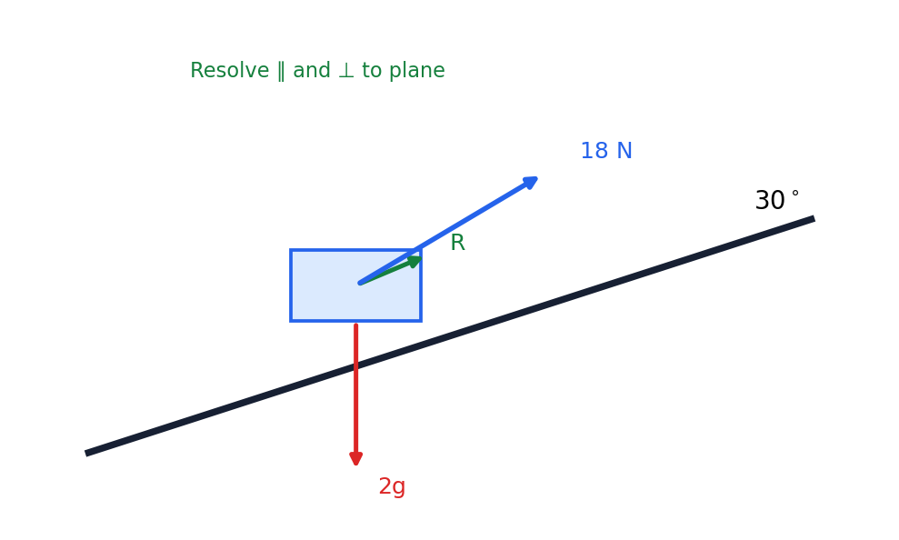

Packet Q8 / Official WME01 Q8 — parcel on a rough inclined plane
From the paper. A parcel P of mass \(2\ \mathrm{kg}\) lies on a rough plane inclined at \(30^\circ\). A force of \(18\ \mathrm{N}\) acts on P at \(40^\circ\) to the plane; \(\mu=0.3\). (a) Find the acceleration. (b) Find the speed at B. (c) Decide whether P then remains at rest.
Status boundary: LIVE SET-UP ONLY. The lesson reached the force diagram and the two governing equations (1) and (2) but did not finish the arithmetic. Every numerical value below the live set-up is OFFICIAL MS REFERENCE ONLY (purple boxes).

Resolve parallel and perpendicular to the plane; apply Newton’s 2nd law along the plane.
Parallel (Newton 2): \(18\cos40^\circ - F_R - 2g\sin30^\circ = 2a\). Friction: \(F_R=\mu R=0.3R\).
Corrected perpendicular equation: \(R+18\sin40^\circ = 2g\cos30^\circ\) (the board line was wrong — use this corrected form).
Sense check: resolving direction is perpendicular to the plane, not “vertically”.
Find \(R\) from the perpendicular equation, then \(F_R\), then substitute into (1) and divide by 2.
\(R=2g\cos30^\circ-18\sin40^\circ=19.6(0.86603)-18(0.64279)\approx5.4039\ \mathrm{N}\).
\(F_R=0.3R\approx1.6212\ \mathrm{N}\).
\(2a=18\cos40^\circ-F_R-2g\sin30^\circ=13.7888-1.6212-9.8\approx2.3676\).
OFFICIAL MS REFERENCE ONLY: \(a\approx1.1838\ \mathrm{m\,s^{-2}}\Rightarrow a\approx1.18\ \mathrm{m\,s^{-2}}\) (or \(\approx1.2\)).
Sense check: keep the unrounded \(1.1838\ldots\) for onward substitution.
Use the SUVAT energy-free relation \(v^2=u^2+2as\).
Formula: \(v^2=u^2+2as\).
\(v^2=2^2+2(1.1838)(5)\approx15.838\).
OFFICIAL MS REFERENCE ONLY: \(v\approx3.98\ \mathrm{m\,s^{-1}}\) (or \(\approx4.0\)).
Sense check: speed is positive; use the unrounded \(a\).
Compare the down-plane weight component with the maximum available friction \(\mu R\).
Formula: max friction \(=\mu R=0.3(16.974)\approx5.09\ \mathrm{N}\).
OFFICIAL MS REFERENCE ONLY: \(9.8\ \mathrm{N} > 5.09\ \mathrm{N}\), so friction cannot hold the parcel.
Sense check: the down-plane component exceeds the limiting friction.
Retrieve the symbolic route before substituting numbers.
1. Read the command. "Show that" ends at the displayed result; "exact" forbids an early decimal; "magnitude" means a positive quantity (drop modulus bars); "find the acceleration" needs Newton's 2nd law along the resolving direction.
2. Formula first. Write a named formula or identity symbolically, then substitute: momentum \(mv\), impulse \(mv-mu\), the SUVAT set, \(F=\mu R\) (and \(F\le\mu R\)), principle of moments (clockwise = anticlockwise about a pivot).
3. Preserve the carry-in. Treat each displayed carry-in as known while the earlier grey working is covered. State the new equation created from it rather than referring vaguely to an earlier part.
4. Final check. Check signs, domain or positivity, units where applicable, and requested rounding. Keep stored unrounded values (e.g. \(a=1.1838\ldots\)) until the final requested precision.
Dual-label discipline. The card you worked from is the tutor packet; the official paper is WME01/01 January 2023. Both labels are shown so a packet number never stands alone.